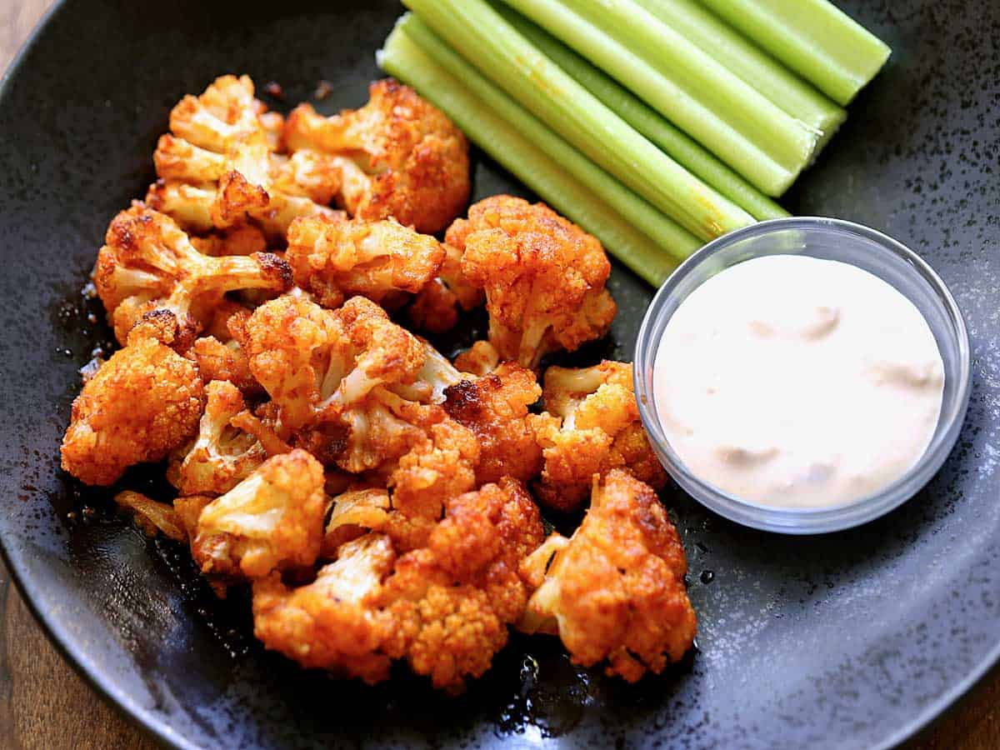

Buffalo Cauliflower

A healthy spin on a classic appeteizer that you won't be able to keep your hands off of.
Who says that appetizers can't be healthy? This dish puts a modern spin on a traditional classic. You seriously won't be able to tell that you are eating a vegetable.
Ingredients
- 1 head of cauliflower washed and dried
- 1 cup milk
- 1 cup flour
- 1 tablespoon olive oil
- 1 teaspoon garlic powder
- pepper to taste
- ⅔ cup Panko bread crumbs
- ⅔ cup Buffalo Sauce
Steps
- Preheat oven to 450°F.
- Cut cauliflower into bite-sized pieces and discard the core.
- Combine milk, flour, oil, garlic powder, and pepper in a large bowl. Place batter and cauliflower in a large zippered bag and gently toss until cauliflower is coated.
- Pour cauliflower into a large strainer, letting any excess batter drip off. You want just a light coating of batter. Sprinkle with Panko breadcrumbs and gently toss.
- Place on a foil-lined pan and bake for 15 minutes. Remove from the oven and gently toss with buffalo sauce. You want the cauliflower coated but not soaked.
- Place cauliflower back on the pan and bake for an additional 5-10 minutes or until cauliflower is tender-crisp.
- Serve with ranch or blue cheese dressing.